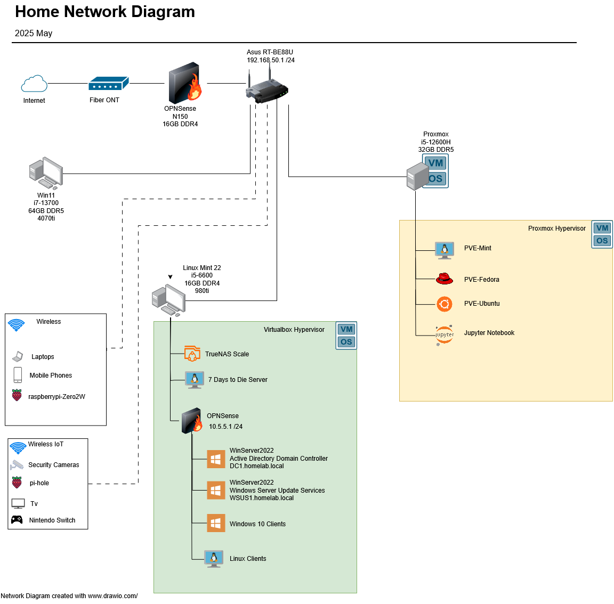

My home lab is a dedicated environment where I experiment with cybersecurity tools, network configurations, virtualization, and system administration. It serves as a playground for learning, testing, and simulating real-world scenarios safely.
Over the past year, I’ve dedicated a portion of my spare time to building and expanding a comprehensive home lab environment focused on networking and cybersecurity exploration. This hands-on project has transformed my theoretical understanding into practical, real-world experience with enterprise-grade network architectures.
All systems connect through my home router, creating a realistic network environment that allows me to observe and analyze traffic patterns across different device types and operating systems.
My home lab began with a simple two-machine setup: my modern gaming PC running Windows and an older PC that I repurposed with Linux Mint. Initially, I used VirtualBox on the Linux machine for basic virtualization experiments to get more familiar with Linux without compromising my main PC.
As my experimentation grew more ambitious, I quickly encountered resource constraints with the VirtualBox setup. The older hardware simply couldn’t handle the increasing number of virtual machines I wanted to run simultaneously. This limitation drove my decision to invest in dedicated hardware for virtualization.
I added the first mini PC specifically to run Proxmox, drawn by the advantages of a Type 1 hypervisor over VirtualBox’s Type 2 architecture. The bare-metal hypervisor approach provided better performance and resource management for my growing collection of Linux distributions, allowing me to gain hands-on experience with various distros without the overhead limitations I’d hit previously.
The network security aspect evolved as I became more interested in traffic segmentation and monitoring. I implemented the OPNsense firewall in VirtualBox specifically to isolate my Windows Server instances, creating a more realistic enterprise-like environment where servers operate behind proper firewall protection rather than directly on the home network.
The final major addition was the second mini PC running OPNsense as a transparent bridge firewall. This was motivated by curiosity about network visibility – I wanted to understand exactly what traffic was leaving my network and what information my ISP could potentially observe. Positioning this monitoring system between the ONT and router gave me the comprehensive network insight I was seeking.
Each expansion addressed specific learning goals or resource limitations, creating a lab that evolved organically based on hands-on discoveries and growing technical curiosity.
The most eye-opening aspect of this project has been gaining visibility into the constant background network activity that occurs even during periods of apparent inactivity. Through systematic traffic analysis, I’ve identified several interesting patterns:
Network Traffic Analysis:
This real-world traffic observation has provided invaluable insight into what normal network behavior looks like, establishing a baseline understanding crucial for future security analysis.
While I’ve always considered myself technically proficient with computers, this project has significantly expanded my practical networking capabilities. The hands-on troubleshooting required to get multiple virtualized systems communicating properly has developed my problem-solving methodology and deepened my understanding of network protocols and configurations.
Practical Experience Gained:
The hands-on experience from this home lab project proved invaluable while pursuing my Network+ and Google Cybersecurity certificates in 2025. Having practical exposure to network traffic analysis, firewall configurations, and multi-system troubleshooting significantly enhanced my understanding of the theoretical concepts covered in coursework.
This year-long project has transformed my understanding of network infrastructure from conceptual to practical. The ability to observe, analyze, and troubleshoot real network traffic in a controlled environment has provided insights impossible to gain through coursework alone. The combination of multiple virtualization platforms, diverse operating systems, and comprehensive traffic monitoring creates an ideal learning laboratory for continued cybersecurity and networking exploration.
The project demonstrates that significant learning can occur through dedicated personal initiative and systematic experimentation, even without formal enterprise environment access.